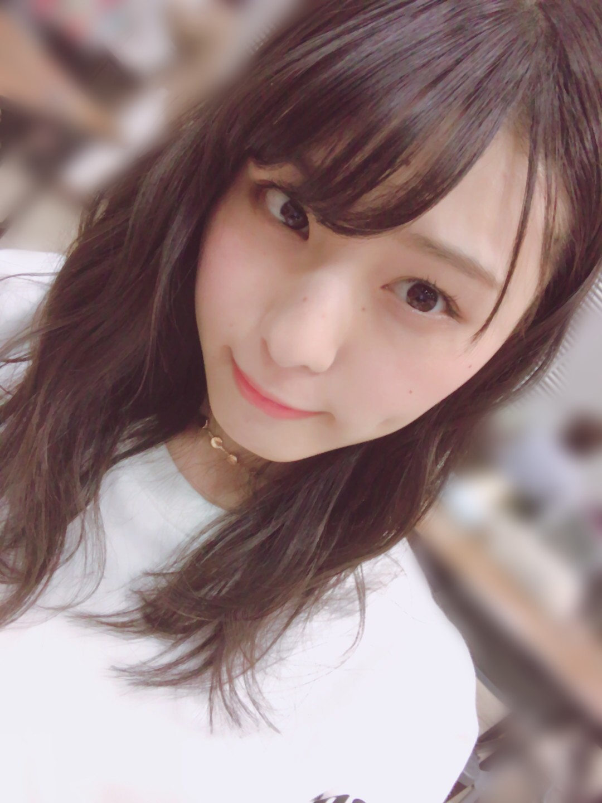
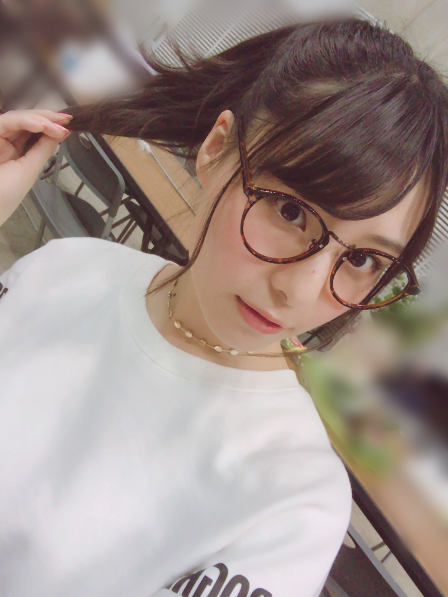
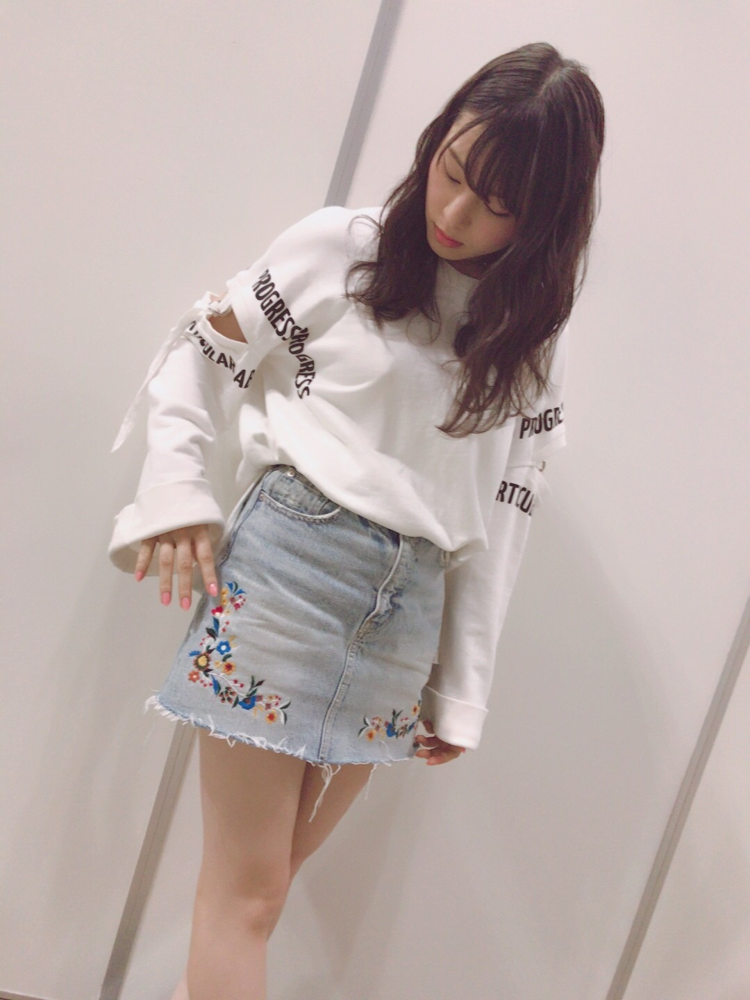
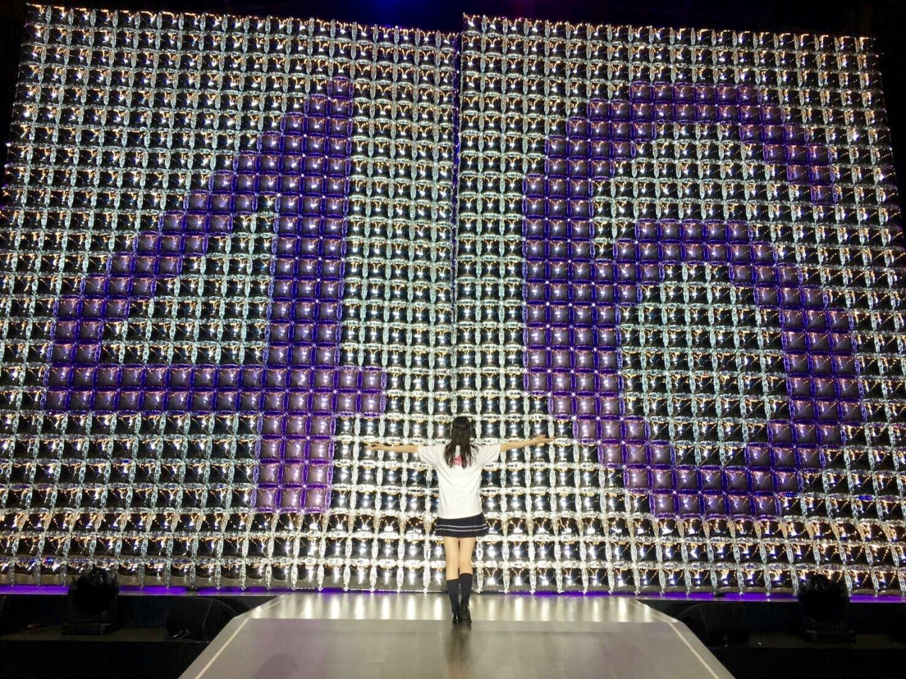
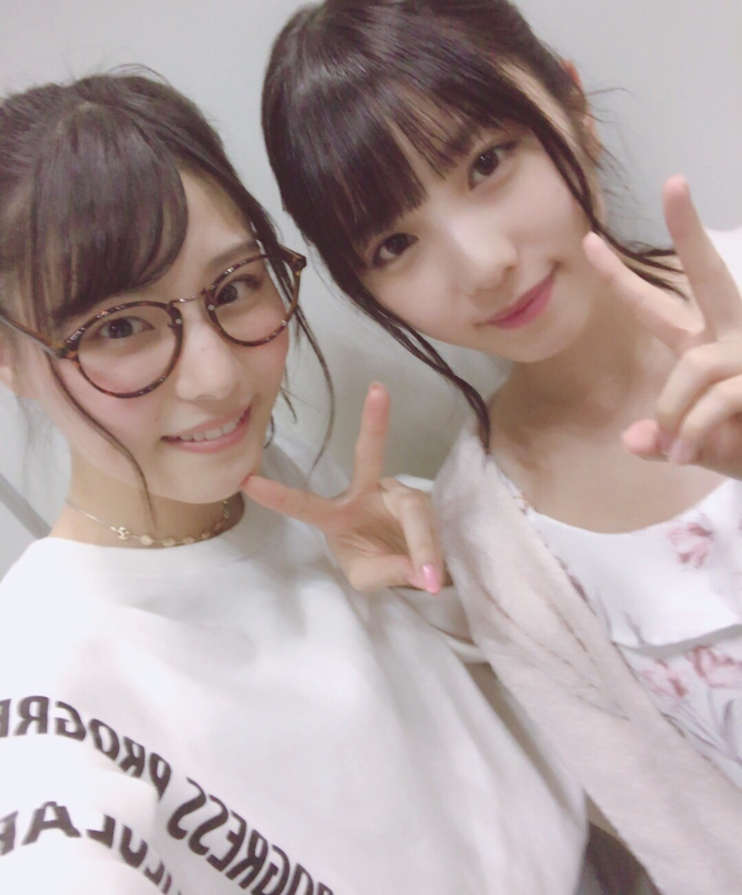

| 2017/04 26 Wed | てっぺんまで_(．．*)vol.180 |
みなさんこんばんはー！
19歳 相楽伊織です！

先日は横浜で個別握手会がありました！
来て下さった皆さん
ありがとうございました♡
レーンもたくさんの方が列に並んでくれて
とっても嬉しかったー♪♪
女の子も前よりも増えて
沢山会いに来てくれて
私は幸せです～( ´ ▽ ` )ﾉ
4部はゆるふわカールにしてもらった！
(ブログ1枚目)
5部は伊達メガネと
ポニーテール！

全身はこんな感じ↓

このスカートの刺繍がお気に入り♡
腕の部分の隙間もお気に入り♡
アンダーライブの感想
沢山聞けて良かったです♪
歌とかダンスが
｢上手かったね｣｢カッコよかったよー｣って
言われるとお世辞でも本当に嬉しいっ
やって良かったって思える！

私に関わっている全てが大切
みんなが大好き、大好きだよ。
それとね、
握手会の時に撮ったの(^^)

祐希ちゃん♡
かわいい～すき♡
お互い緊張してる感がすごい、(^^;
今週の握手会は
1.2.3部と久しぶりに朝からなので
寝坊、遅刻しないようにお願いしますね！！
 楽天SHOWTIME のぎ天2
楽天SHOWTIME のぎ天2
見てねー♪
i o r i .

コメント(272)
2017/04/26 22:30